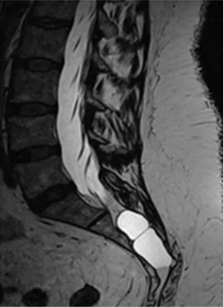
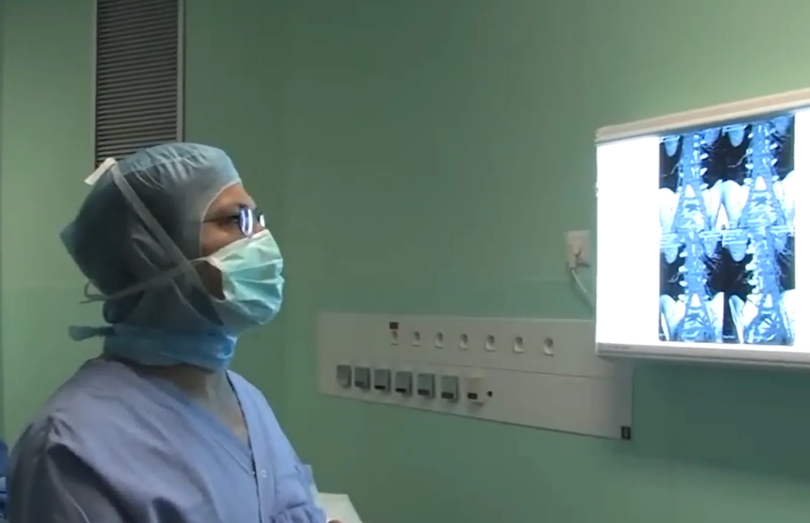

Plus de trente-cinq ans de neurochirurgie m'ont appris une chose : avant une image radiologique, il y a une personne qui souffre, et une famille qui espère.
Lombalgies facettaires.
Kystes de Tarlov.
Du diagnostic au traitement de douleurs souvent méconnues.
Plus de trente-cinq ans de neurochirurgie m'ont appris une chose : avant une image radiologique, il y a une personne qui souffre, et une famille qui espère.
J'ai consacré ma carrière aux patients que l'on n'écoutait parfois plus. Quand les outils manquaient pour les traiter, je les ai conçus.
Opérer n'est jamais un premier choix. C'est une décision que l'on prend ensemble, quand le diagnostic est solide, que tout a été expliqué, et que le reste a échoué.
Une carrière consacrée à l'innovation médicale
Ma fierté : bâtir un service de chirurgie du rachis de zéro, et l'emmener au sommet.
Classement Le Point — Chirurgie du Dos · Hôpitaux Civils de Colmar
La lombalgie chronique est l'une des premières causes de handicap en France. Derrière ce mot unique se cachent pourtant des douleurs très différentes. Pendant des décennies, la médecine a concentré son attention sur le disque intervertébral, en oubliant une autre source majeure de douleur : les articulations facettaires, ces petites articulations situées à l'arrière de chaque vertèbre.
Comprendre le syndrome facettaireComme beaucoup de neurochirurgiens, j'ai longtemps cru que les kystes de Tarlov n'étaient pas une maladie. On les voyait sur les IRM, on les nommait, puis on les rangeait au rayon des curiosités anatomiques. Sans imaginer qu'ils puissent être la source d'un véritable calvaire.
Comprendre les kystes de Tarlov
Je transmets, forme et partage auprès des pairs une expérience clinique construite au fil des années.
Demander une formation